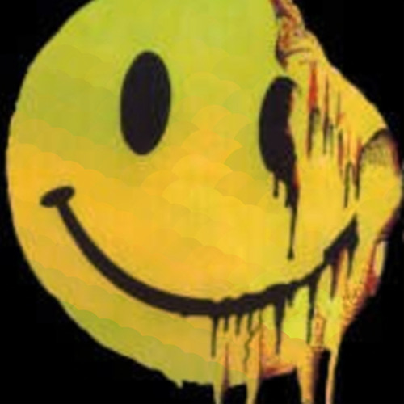
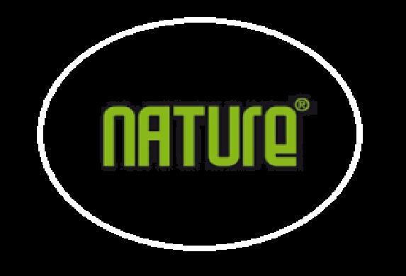
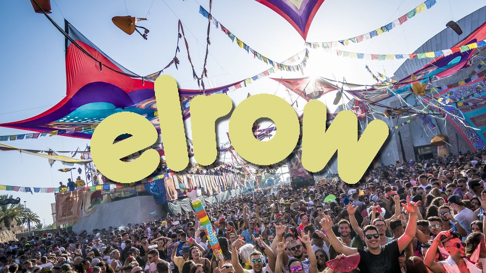

Reproducir → Los niños del parque Invisible Crecimos entre bajos, máquinas y parques que ardían de noche. Esta sesión es para los que nunca dejaron de bailar a oscuras.
 Reproducir → Aero-Red Invisible Síntomas: sudor, euforia y acidez mental. Tratamiento: Aerored — ácido en vena, rave sin receta
 Reproducir → Nature Invisible Techno con alma viva, tribal, eufórico. Nature no era una discoteca, era una jungla electrónica. Y este su homenaje.
 Reproducir → Invisible Invisible ElRow [LOG CAMBIO] Invisible Un delirio; confeti, techno y fantasía en estado puro.